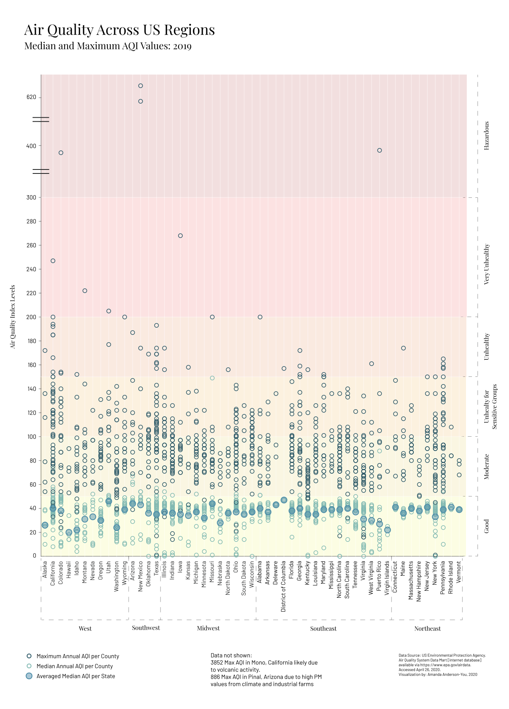

Essential Sleep
Sleeping is a basic human need; healthy sleep necessitates sufficient duration,
quality, timing, and regularity with the absence of sleep disturbances or disorders
(NHLBI).
The recommended amount of sleep for adults in the US is 7 hours or more. Sleeping an adequate amount
lowers a person's risk of suffering from numerous chronic health conditions (CDC).
When evaluating the implications of the climate crisis, the vulnerability of sleep quality is a factor that is perhaps not widely considered,
however, poor air quality and high ambient temperatures contribute to sleep loss, a recognized public health epidemic.
Climate change affects air quality in a multitude of ways, whether through excessive periods of drought with dust and high temperatures, increasing wildfire frequency and ground-level ozone pollution, or through shifts in the growing season.
More then one third of Americans report insufficient sleep.
Air Pollutants
Air pollution is the result of the release of harmful or excessive quantities of gaseous substances such as nitrogen dioxide,
ozone, and particulate matter (PM) into the atmosphere (NCBI).
According to the 2018 National Climate Assessment, more than 100 million
people in the USA reside where air pollution exceeds health-based air quality standards.
The World Health Organization reported
in 2018 that 9 out of 10 people worldwide breathe polluted air, and an estimated 7 million people die every year due to exposure
to fine particles in polluted air (WHO). The climate crisis will continue to worsen these existing
air pollution levels.
Observe decade annual reports from 1980 through 2019. Overall maximum values have come down into a more moderate range, however key locations in the US experience strikingly high AQI levels as a result of wildfires, droughts, and industrial activities.



The frequency and severity of respiratory illnesses such as asthma are expected to continue to increase as a result of the climate crisis. These increases are due to changes in weather which contributes to the concentrations of both ozone and particulate matter in the air, both of which adversely affect human health (NCA).
9 out of 10 people worldwide regularly breath polluted air.